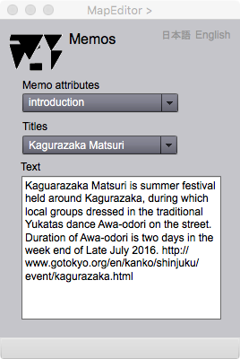

Memo Viewer
Introduction
This is an information page for the display of memos. If more than one memos are stored in a feature, an appropriate memo can be selected from the drop dpwn list.
Memo viewer

Figure 1. Information page to display memos
FIELDS
Memo attributes (selectable)
The attribute type to show the memo can be selected on this dropdown list.
Titles (selectable)
The memo title can be selected on this dropdown list.
Text
The display of a memo.
日本語
今あなたが読んでいるドキュメントが表示されます．
English
You can read the tutorial written in English.